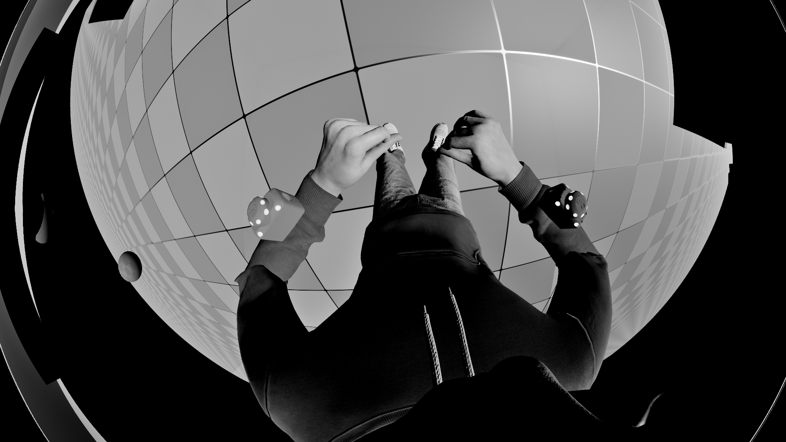
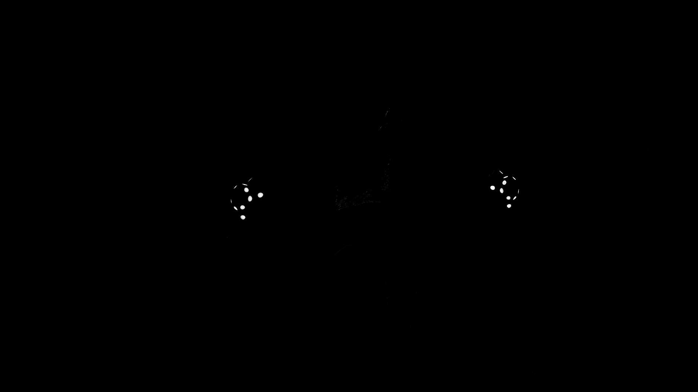
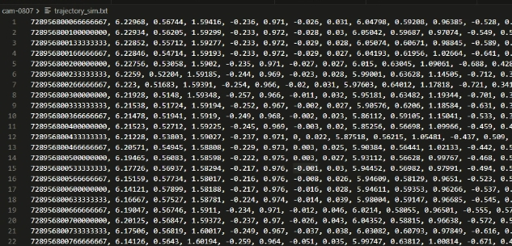
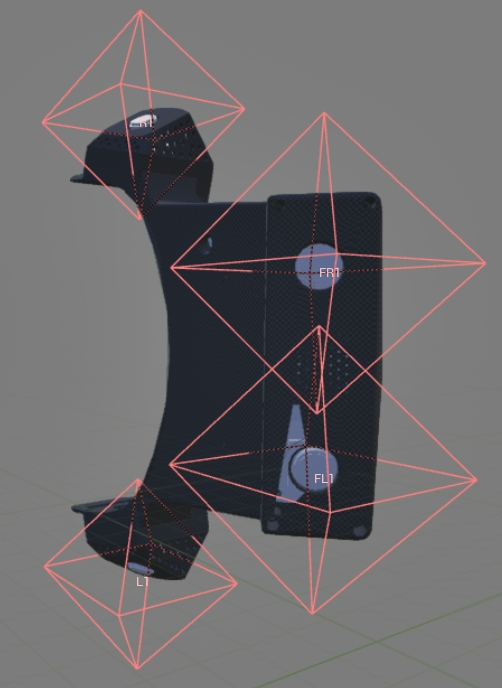

Maxinsights · 光学实习生
高精度视锥仿真平台与鱼眼镜头标定 · 2026.04 – 2026.08
概述
基于 UE5 引擎构建高精度视锥仿真平台，完成三维设备模型集成、MetaHuman 骨骼绑定与运动驱动，实现了多相机阵列下的全场光学采样和准确 FOV 复现，解决了传统仿真中光锥覆盖范围与人体运动的不匹配问题。并仿真红外光源，输出长短帧图像以及设备 pose 的四元数和空间坐标，经算法完成轨迹预测可实现后续全仿真训练。采用双球面畸变模型对公司选定的鱼眼镜头进行标定，将重投影误差降至 0.5 像素以内；并在 UE5 中搭建基于标定参数的畸变还原管线，实现了镜头畸变的真实复现，为镜头优化与三维重建精度提升提供了关键数据支撑。
成果展示
视锥仿真
FOV 方锥


大 FOV 圆锥


鱼眼镜头畸变
红外及轨迹仿真




×